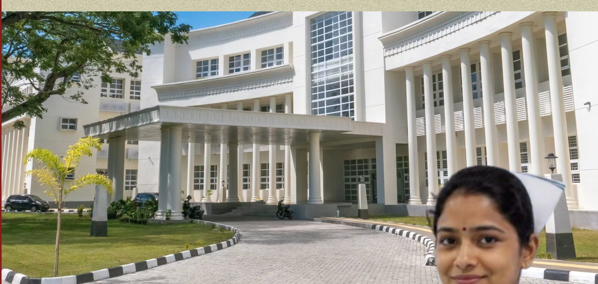
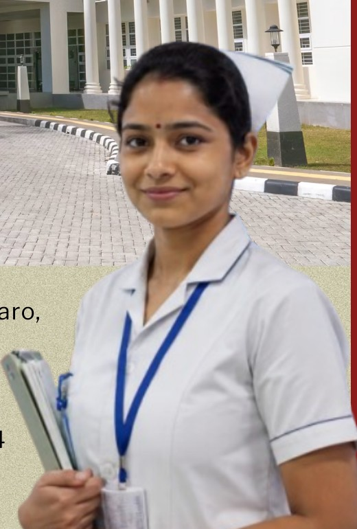
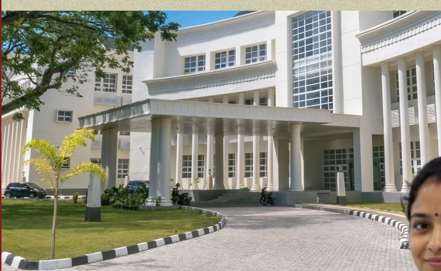

Vision
To become a trusted centre for nursing education in the region by providing accessible, quality and professionally oriented education that develops competent, compassionate and responsible healthcare professionals.
We begin our journey in 2026 with a commitment to accessible, quality and professionally oriented nursing education that develops knowledge, practical skills, compassion and professional confidence.

Educate with purpose.
Care with compassion.
Serve with commitment.
Explore our nursing programmes and accommodation information at a glance.
Established by Samar Bharti Foundation, Samar Bharti College of Nursing begins its journey in 2026 with a commitment to making quality nursing education more accessible to in Chandankiyari, Bokaro and surrounding areas.
Our objective is not only to provide classroom-based education, but to nurture into responsible, skilled and compassionate healthcare professionals through structured academic learning, practical exposure, clinical training and a supportive learning environment.
To become a trusted centre for nursing education in the region by providing accessible, quality and professionally oriented education that develops competent, compassionate and responsible healthcare professionals.
Professional learning, personal guidance and access to nursing education closer to home.
Contact Us →A structured academic environment focused on nursing knowledge, practical skills and professional confidence.
Professional nursing education closer to home for students in Chandankiyari, Bokaro and surrounding areas.
Practical learning and clinical training opportunities as per applicable course requirements and institutional arrangements.
Guidance, career counselling and employment opportunities shared with eligible students, as available.
Opportunities for practical exposure and professional learning through relevant institutional and clinical arrangements.
A hostel environment intended to support students who need accommodation while studying away from home.
Academic guidance, personal attention and encouragement to help students learn, grow and prepare for professional practice.
Our Chandankiyari location seeks to reduce the geographical barrier to professional education for students in the region.
English-medium degree programme in nursing.
Hindi / English diploma programme in General Nursing & Midwifery.

DiplomaHindi / English diploma programme in Auxiliary Nurse Midwifery.
Admissions guidance: Please speak with the Admissions Team before applying to confirm the latest eligibility criteria, affiliation details and admission process.
Contact Admissions →Our learning approach combines structured academic study with practical exposure, clinical training and professional learning opportunities through applicable course requirements and institutional arrangements.

Hostel accommodation is intended to provide a safe, disciplined and comfortable living environment for students coming from outside Chandankiyari.
Please contact the college to confirm current hostel availability, room arrangements and any other accommodation information.
Contact Us →Ragging in any form is strictly prohibited. Students are expected to maintain a safe, respectful and supportive campus environment. Any incident, concern or complaint should be reported promptly to the college administration.
Please contact the college administration for the complete Rules & Regulations and formal reporting guidance.Barkama, Chandankiyari, Bokaro,
Jharkhand — 828134
For programme, eligibility, fee, accommodation and general college enquiries.